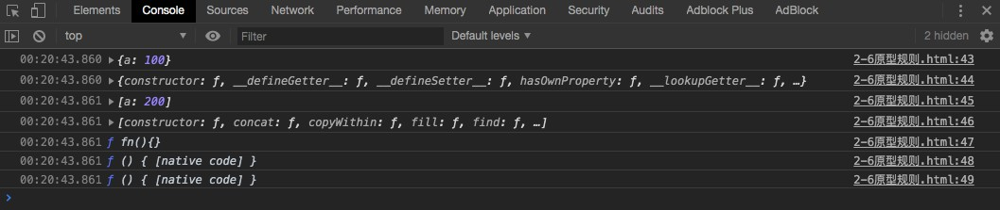
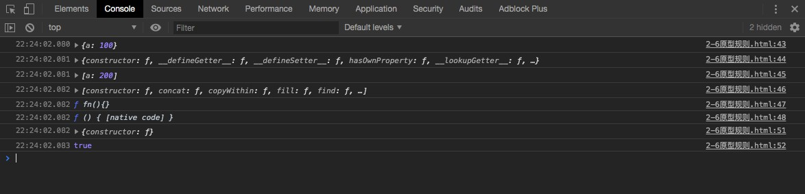

<!DOCTYPE HTML>
<html lang="zh-CN">
<head><meta name="generator" content="Hexo 3.8.0">
    <!--Setting-->
    <meta charset="UTF-8">
    <meta name="viewport" content="width=device-width, user-scalable=no, initial-scale=1.0, maximum-scale=1.0, minimum-scale=1.0">
    <meta http-equiv="X-UA-Compatible" content="IE=Edge,chrome=1">
    <meta http-equiv="Cache-Control" content="no-siteapp">
    <meta http-equiv="Cache-Control" content="no-transform">
    <meta name="renderer" content="webkit|ie-comp|ie-stand">
    <meta name="apple-mobile-web-app-capable" content="王永杰的网络日志">
    <meta name="apple-mobile-web-app-status-bar-style" content="black">
    <meta name="format-detection" content="telephone=no,email=no,adress=no">
    <meta name="browsermode" content="application">
    <meta name="screen-orientation" content="portrait">
    <link rel="dns-prefetch" href="http://wangyongjie.top">
    <!--SEO-->

    <meta name="keywords" content="面试">


    <meta name="description" content="
慕课网视频教程之前端JS基础面试技巧

2-1 变量类型和计算一
JS中使用typeof能得到的哪些类型
何时使用===何时使用==
JS中有哪些内置函数
JS变量按照存储方式区分为哪些类型,...">


<meta name="robots" content="all">
<meta name="google" content="all">
<meta name="googlebot" content="all">
<meta name="verify" content="all">

    <!--Title-->


<title>前端JS基础面试技巧-更新中。。。 | 王永杰的网络日志</title>


    <link rel="alternate" href="/atom.xml" title="王永杰的网络日志" type="application/atom+xml">


    <link rel="icon" href="/favicon.ico">

    


<link rel="stylesheet" href="/css/bootstrap.min.css?rev=3.3.7">
<link rel="stylesheet" href="/css/font-awesome.min.css?rev=4.5.0">
<link rel="stylesheet" href="/css/style.css?rev=@@hash">


    


    <script>
        var _hmt = _hmt || [];
        (function() {
            var hm = document.createElement("script");
            hm.src = "https://hm.baidu.com/hm.js?f42ffe5fed856accbf91820f137dab46";
            var s = document.getElementsByTagName("script")[0];
            s.parentNode.insertBefore(hm, s);
        })();
    </script>


    

</head>

</html>
<!--[if lte IE 8]>
<style>
    html{ font-size: 1em }
</style>
<![endif]-->
<!--[if lte IE 9]>
<div style="ie">你使用的浏览器版本过低，为了你更好的阅读体验，请更新浏览器的版本或者使用其他现代浏览器，比如Chrome、Firefox、Safari等。</div>
<![endif]-->

<body>
    <header class="main-header" style="background-image:url(http://snippet.shenliyang.com/img/banner.jpg)">
    <div class="main-header-box">
        <a class="header-avatar" href="/" title="wangyongjie">
            
        </a>
        <div class="branding">
        	<!--<h2 class="text-hide">Snippet主题,从未如此简单有趣</h2>-->
            
                <h2> 我是谁 我在哪 我在做什么 </h2>
            
    	</div>
    </div>
</header>
    <nav class="main-navigation">
    <div class="container">
        <div class="row">
            <div class="col-sm-12">
                <div class="navbar-header"><span class="nav-toggle-button collapsed pull-right" data-toggle="collapse" data-target="#main-menu" id="mnav">
                    <span class="sr-only"></span>
                        <i class="fa fa-bars"></i>
                    </span>
                    <a class="navbar-brand" href="http://wangyongjie.top">王永杰的网络日志</a>
                </div>
                <div class="collapse navbar-collapse" id="main-menu">
                    <ul class="menu">
                        
                            <li role="presentation" class="text-center">
                                <a href="/"><i class="fa "></i>首页</a>
                            </li>
                        
                            <li role="presentation" class="text-center">
                                <a href="/categories/前端/"><i class="fa "></i>前端</a>
                            </li>
                        
                            <li role="presentation" class="text-center">
                                <a href="/categories/后端/"><i class="fa "></i>后端</a>
                            </li>
                        
                            <li role="presentation" class="text-center">
                                <a href="/categories/工具/"><i class="fa "></i>工具</a>
                            </li>
                        
                            <li role="presentation" class="text-center">
                                <a href="/webnav/"><i class="fa "></i>导航</a>
                            </li>
                        
                            <li role="presentation" class="text-center">
                                <a href="/archives/"><i class="fa "></i>时间轴</a>
                            </li>
                        
                            <li role="presentation" class="text-center">
                                <a href="/message/"><i class="fa "></i>留言板</a>
                            </li>
                        
                            <li role="presentation" class="text-center">
                                <a href="/about/"><i class="fa "></i>关于</a>
                            </li>
                        
                    </ul>
                </div>
            </div>
        </div>
    </div>
</nav>
    <section class="content-wrap">
        <div class="container">
            <div class="row">
                <main class="col-md-8 main-content m-post">
                    <p id="process"></p>
<article class="post">
    <div class="post-head">
        <h1 id="前端JS基础面试技巧-更新中。。。">
            
	            前端JS基础面试技巧-更新中。。。
            
        </h1>
        <div class="post-meta">
    
        <span class="categories-meta fa-wrap">
            <i class="fa fa-folder-open-o"></i>
            <a class="category-link" href="/categories/前端/">前端</a>
        </span>
    

    
        <span class="fa-wrap">
            <i class="fa fa-tags"></i>
            <span class="tags-meta">
                
                    <a class="tag-link" href="/tags/面试/">面试</a>
                
            </span>
        </span>
    

    
        
        <span class="fa-wrap">
            <i class="fa fa-clock-o"></i>
            <span class="date-meta">2019/03/21</span>
        </span>
        
    
</div>
            
            
    </div>
    
    <div class="post-body post-content">
        <blockquote>
<p>慕课网视频教程之<a href="https://coding.imooc.com/class/115.html" target="_blank" rel="noopener"><strong>前端JS基础面试技巧</strong></a></p>
</blockquote>
<h2 id="2-1-变量类型和计算一"><a href="#2-1-变量类型和计算一" class="headerlink" title="2-1 变量类型和计算一"></a>2-1 变量类型和计算一</h2><ul>
<li>JS中使用typeof能得到的哪些类型</li>
<li>何时使用===何时使用==</li>
<li>JS中有哪些内置函数</li>
<li>JS变量按照存储方式区分为哪些类型,并描述其特点</li>
<li>如何理解JSON</li>
</ul>
<h3 id="1-值类型"><a href="#1-值类型" class="headerlink" title="1. 值类型"></a>1. 值类型</h3><figure class="highlight javascript"><table><tr><td class="gutter"><pre><span class="line">1</span><br><span class="line">2</span><br><span class="line">3</span><br><span class="line">4</span><br><span class="line">5</span><br></pre></td><td class="code"><pre><span class="line"><span class="keyword">var</span> a = <span class="number">100</span>;</span><br><span class="line"><span class="keyword">var</span> b = a;</span><br><span class="line">a = <span class="number">200</span>;</span><br><span class="line"><span class="built_in">console</span>.log(<span class="string">"b---&gt;"</span> + b)     <span class="comment">//100</span></span><br><span class="line"><span class="built_in">console</span>.log(<span class="string">"a---&gt;"</span> + a)     <span class="comment">//200</span></span><br></pre></td></tr></table></figure>
<h3 id="2-引用类型-（指针）"><a href="#2-引用类型-（指针）" class="headerlink" title="2. 引用类型 （指针）"></a>2. 引用类型 （指针）</h3><figure class="highlight javascript"><table><tr><td class="gutter"><pre><span class="line">1</span><br><span class="line">2</span><br><span class="line">3</span><br><span class="line">4</span><br><span class="line">5</span><br></pre></td><td class="code"><pre><span class="line"><span class="keyword">var</span> a = &#123; <span class="attr">age</span>: <span class="number">20</span> &#125;;</span><br><span class="line"><span class="keyword">var</span> b = a;</span><br><span class="line">b.age = <span class="number">21</span>;</span><br><span class="line"><span class="built_in">console</span>.log(a)          <span class="comment">//20</span></span><br><span class="line"><span class="built_in">console</span>.log(b)          <span class="comment">//20</span></span><br></pre></td></tr></table></figure>
<h3 id="3-typeof-运算符-只能区分值类型"><a href="#3-typeof-运算符-只能区分值类型" class="headerlink" title="3. typeof 运算符(只能区分值类型)"></a>3. typeof 运算符(只能区分值类型)</h3><figure class="highlight javascript"><table><tr><td class="gutter"><pre><span class="line">1</span><br><span class="line">2</span><br><span class="line">3</span><br><span class="line">4</span><br><span class="line">5</span><br><span class="line">6</span><br><span class="line">7</span><br><span class="line">8</span><br><span class="line">9</span><br><span class="line">10</span><br><span class="line">11</span><br><span class="line">12</span><br></pre></td><td class="code"><pre><span class="line"><span class="comment">// ------值类型-------</span></span><br><span class="line"><span class="keyword">typeof</span> <span class="literal">undefined</span>    <span class="comment">// undefined</span></span><br><span class="line"><span class="keyword">typeof</span> <span class="string">'abc'</span>        <span class="comment">// string</span></span><br><span class="line"><span class="keyword">typeof</span> <span class="number">123</span>          <span class="comment">// number</span></span><br><span class="line"><span class="keyword">typeof</span> <span class="literal">true</span>         <span class="comment">// boolean</span></span><br><span class="line"><span class="comment">// ------引用类型-------</span></span><br><span class="line"><span class="keyword">typeof</span> ff           <span class="comment">// object</span></span><br><span class="line"><span class="keyword">typeof</span> []           <span class="comment">// object</span></span><br><span class="line"><span class="keyword">typeof</span> <span class="literal">null</span>         <span class="comment">// object</span></span><br><span class="line"><span class="keyword">typeof</span> <span class="built_in">console</span>.log  <span class="comment">// function</span></span><br><span class="line"></span><br><span class="line"><span class="comment">// 引用类型：对象、数组、函数</span></span><br></pre></td></tr></table></figure>
<h3 id="4-变量计算-强制类型转换-（值类型）"><a href="#4-变量计算-强制类型转换-（值类型）" class="headerlink" title="4. 变量计算  强制类型转换 （值类型）"></a>4. 变量计算  强制类型转换 （值类型）</h3><ol>
<li><p>字符串拼接</p>
<figure class="highlight javascript"><table><tr><td class="gutter"><pre><span class="line">1</span><br><span class="line">2</span><br><span class="line">3</span><br><span class="line">4</span><br></pre></td><td class="code"><pre><span class="line"><span class="keyword">var</span> a = <span class="number">100</span> + <span class="number">10</span>;</span><br><span class="line"><span class="keyword">var</span> b = <span class="number">100</span> + <span class="string">'10'</span>;</span><br><span class="line"><span class="built_in">console</span>.log(a)      <span class="comment">//110</span></span><br><span class="line"><span class="built_in">console</span>.log(b)      <span class="comment">//10010</span></span><br></pre></td></tr></table></figure>
</li>
<li><p>== 运算符</p>
<figure class="highlight javascript"><table><tr><td class="gutter"><pre><span class="line">1</span><br><span class="line">2</span><br><span class="line">3</span><br><span class="line">4</span><br><span class="line">5</span><br><span class="line">6</span><br><span class="line">7</span><br></pre></td><td class="code"><pre><span class="line"><span class="built_in">console</span>.log( <span class="number">100</span> == <span class="string">'100'</span>)      <span class="comment">//true</span></span><br><span class="line"><span class="built_in">console</span>.log( <span class="number">0</span> == <span class="string">''</span>)           <span class="comment">//true</span></span><br><span class="line"><span class="built_in">console</span>.log( <span class="literal">null</span> == <span class="literal">undefined</span>) <span class="comment">//true</span></span><br><span class="line"></span><br><span class="line"><span class="built_in">console</span>.log( <span class="number">100</span> === <span class="string">'100'</span>)      <span class="comment">//false</span></span><br><span class="line"><span class="built_in">console</span>.log( <span class="number">0</span> === <span class="string">''</span>)           <span class="comment">//false</span></span><br><span class="line"><span class="built_in">console</span>.log( <span class="literal">null</span> === <span class="literal">undefined</span>) <span class="comment">//false</span></span><br></pre></td></tr></table></figure>
</li>
<li><p>if 语句</p>
<figure class="highlight javascript"><table><tr><td class="gutter"><pre><span class="line">1</span><br><span class="line">2</span><br><span class="line">3</span><br><span class="line">4</span><br><span class="line">5</span><br><span class="line">6</span><br><span class="line">7</span><br><span class="line">8</span><br><span class="line">9</span><br><span class="line">10</span><br><span class="line">11</span><br><span class="line">12</span><br><span class="line">13</span><br><span class="line">14</span><br></pre></td><td class="code"><pre><span class="line"><span class="keyword">var</span> a = <span class="literal">true</span>;</span><br><span class="line"><span class="keyword">if</span>( a )&#123;</span><br><span class="line">    <span class="comment">// 会执行</span></span><br><span class="line">&#125;</span><br><span class="line"></span><br><span class="line"><span class="keyword">var</span> b = <span class="number">100</span>;</span><br><span class="line"><span class="keyword">if</span>( b )&#123;</span><br><span class="line">    <span class="comment">// 会执行</span></span><br><span class="line">&#125;</span><br><span class="line"></span><br><span class="line"><span class="keyword">var</span> c = <span class="number">100</span>;</span><br><span class="line"><span class="keyword">if</span>( c )&#123;</span><br><span class="line">    <span class="comment">// 不会执行</span></span><br><span class="line">&#125;</span><br></pre></td></tr></table></figure>
</li>
<li><p>逻辑运算</p>
<figure class="highlight javascript"><table><tr><td class="gutter"><pre><span class="line">1</span><br><span class="line">2</span><br><span class="line">3</span><br><span class="line">4</span><br><span class="line">5</span><br><span class="line">6</span><br><span class="line">7</span><br><span class="line">8</span><br><span class="line">9</span><br><span class="line">10</span><br><span class="line">11</span><br><span class="line">12</span><br><span class="line">13</span><br></pre></td><td class="code"><pre><span class="line"><span class="built_in">console</span>.log(<span class="number">10</span> &amp;&amp; <span class="number">0</span>)        <span class="comment">// 0</span></span><br><span class="line"><span class="built_in">console</span>.log(<span class="string">''</span> || <span class="string">'abc'</span>)    <span class="comment">// abc</span></span><br><span class="line"><span class="built_in">console</span>.log(!<span class="built_in">window</span>.abc)    <span class="comment">// true</span></span><br><span class="line"></span><br><span class="line"><span class="comment">// &amp;&amp;表示先运算符号左边的东西，然后判断是否为true，是true就继续运算右边的然后判断并输出，是false就停下来直接输出不会再运行后面的东西。</span></span><br><span class="line"></span><br><span class="line"><span class="comment">// || 表示先运算符号左边的东西，然后判断是否为true，是true就停下来直接输出不会再运行后面的东西，是false就继续运算右边的然后判断并输出。</span></span><br><span class="line"></span><br><span class="line"></span><br><span class="line"><span class="comment">// 判断一个变量会被成为 true 或者 false</span></span><br><span class="line"><span class="keyword">var</span> a = <span class="number">100</span></span><br><span class="line"><span class="built_in">console</span>.log(!!a)    <span class="comment">// true</span></span><br><span class="line"><span class="comment">// 因为!a时候会进行强制类型转换，变成boolean类型，!!两个就是会转换成原始是true还是false</span></span><br></pre></td></tr></table></figure>
</li>
</ol>
<h2 id="2-2-变量类型和计算二"><a href="#2-2-变量类型和计算二" class="headerlink" title="2-2 变量类型和计算二"></a>2-2 变量类型和计算二</h2><blockquote>
<p>解答</p>
</blockquote>
<h3 id="1-JS中使用typeof能得到的类型"><a href="#1-JS中使用typeof能得到的类型" class="headerlink" title="1. JS中使用typeof能得到的类型"></a>1. JS中使用typeof能得到的类型</h3><figure class="highlight javascript"><table><tr><td class="gutter"><pre><span class="line">1</span><br><span class="line">2</span><br><span class="line">3</span><br><span class="line">4</span><br><span class="line">5</span><br><span class="line">6</span><br><span class="line">7</span><br><span class="line">8</span><br></pre></td><td class="code"><pre><span class="line"><span class="keyword">typeof</span> <span class="literal">undefined</span> <span class="comment">// undefined</span></span><br><span class="line"><span class="keyword">typeof</span> <span class="string">'abc'</span> <span class="comment">// string</span></span><br><span class="line"><span class="keyword">typeof</span> <span class="number">123</span> <span class="comment">// numbe</span></span><br><span class="line"><span class="keyword">typeof</span> <span class="literal">true</span> <span class="comment">// boolean</span></span><br><span class="line"><span class="keyword">typeof</span> &#123;&#125;<span class="comment">// object</span></span><br><span class="line"><span class="keyword">typeof</span> [] <span class="comment">// object</span></span><br><span class="line"><span class="keyword">typeof</span> <span class="literal">null</span> <span class="comment">// object 这个是特殊的</span></span><br><span class="line"><span class="keyword">typeof</span> <span class="built_in">console</span>.log <span class="comment">// function</span></span><br></pre></td></tr></table></figure>
<h3 id="2-何时使用-何时使用"><a href="#2-何时使用-何时使用" class="headerlink" title="2. 何时使用 === 何时使用 =="></a>2. 何时使用 <code>===</code> 何时使用 <code>==</code></h3><figure class="highlight javascript"><table><tr><td class="gutter"><pre><span class="line">1</span><br><span class="line">2</span><br><span class="line">3</span><br><span class="line">4</span><br><span class="line">5</span><br><span class="line">6</span><br><span class="line">7</span><br></pre></td><td class="code"><pre><span class="line"><span class="keyword">if</span> (obj.a == <span class="literal">null</span>) &#123;</span><br><span class="line">    <span class="comment">// 这里相当于 obj.a === null || obj.a === undefined 的简写形式</span></span><br><span class="line">    <span class="comment">// 这是 jQuery 源码中推荐的写法</span></span><br><span class="line">&#125;</span><br><span class="line"></span><br><span class="line"><span class="comment">//除了这个全是 ===</span></span><br><span class="line"><span class="comment">// 参考jQuery源码</span></span><br></pre></td></tr></table></figure>
<h3 id="3-JS中的内置函数"><a href="#3-JS中的内置函数" class="headerlink" title="3. JS中的内置函数"></a>3. JS中的内置函数</h3><figure class="highlight javascript"><table><tr><td class="gutter"><pre><span class="line">1</span><br><span class="line">2</span><br><span class="line">3</span><br><span class="line">4</span><br><span class="line">5</span><br><span class="line">6</span><br><span class="line">7</span><br><span class="line">8</span><br><span class="line">9</span><br></pre></td><td class="code"><pre><span class="line">object</span><br><span class="line"><span class="built_in">Array</span></span><br><span class="line"><span class="built_in">Boolean</span></span><br><span class="line"><span class="built_in">Number</span></span><br><span class="line"><span class="built_in">String</span></span><br><span class="line"><span class="built_in">Function</span></span><br><span class="line"><span class="built_in">Date</span></span><br><span class="line"><span class="built_in">RegExp</span></span><br><span class="line"><span class="built_in">Error</span></span><br></pre></td></tr></table></figure>
<p>原型链部分会细讲</p>
<h3 id="4-JS按存储方式区分变量类型"><a href="#4-JS按存储方式区分变量类型" class="headerlink" title="4. JS按存储方式区分变量类型"></a>4. JS按存储方式区分变量类型</h3><ol>
<li><p>值类型</p>
<figure class="highlight javascript"><table><tr><td class="gutter"><pre><span class="line">1</span><br><span class="line">2</span><br><span class="line">3</span><br><span class="line">4</span><br><span class="line">5</span><br></pre></td><td class="code"><pre><span class="line"><span class="keyword">var</span> a = <span class="number">10</span>;</span><br><span class="line"><span class="keyword">var</span> b = a;</span><br><span class="line">a = <span class="number">20</span>;</span><br><span class="line"><span class="built_in">console</span>.log(a)  <span class="comment">//20</span></span><br><span class="line"><span class="built_in">console</span>.log(b)  <span class="comment">//10</span></span><br></pre></td></tr></table></figure>
</li>
<li><p>引用类型</p>
</li>
</ol>
<figure class="highlight javascript"><table><tr><td class="gutter"><pre><span class="line">1</span><br><span class="line">2</span><br><span class="line">3</span><br><span class="line">4</span><br><span class="line">5</span><br><span class="line">6</span><br><span class="line">7</span><br><span class="line">8</span><br></pre></td><td class="code"><pre><span class="line"><span class="keyword">var</span> obj1 = &#123;</span><br><span class="line">    x : <span class="number">100</span></span><br><span class="line">&#125;</span><br><span class="line"><span class="keyword">var</span> obj2 = obj1;</span><br><span class="line">obj1.x = <span class="number">200</span>;</span><br><span class="line"><span class="built_in">console</span>.log(obj1.x)     <span class="comment">//200</span></span><br><span class="line"><span class="built_in">console</span>.log(obj2.x)     <span class="comment">//200</span></span><br><span class="line"><span class="comment">//并不是真正的值拷贝，值是相互干预的。</span></span><br></pre></td></tr></table></figure>
<h2 id="2-3-变量类型和计算三"><a href="#2-3-变量类型和计算三" class="headerlink" title="2-3 变量类型和计算三"></a>2-3 变量类型和计算三</h2><h3 id="1-如何理解JSON"><a href="#1-如何理解JSON" class="headerlink" title="1. 如何理解JSON"></a>1. 如何理解JSON</h3><blockquote>
<p>以前也许还需要考虑兼容，现在看来也是js中的一个内置对象而已，和Math一样，虽然不是函数，是一个JS对象</p>
</blockquote>
<blockquote>
<p>同时也是一种数据格式</p>
</blockquote>
<p>JSON包含以下两个API</p>
<figure class="highlight javascript"><table><tr><td class="gutter"><pre><span class="line">1</span><br><span class="line">2</span><br><span class="line">3</span><br><span class="line">4</span><br><span class="line">5</span><br><span class="line">6</span><br><span class="line">7</span><br></pre></td><td class="code"><pre><span class="line"><span class="comment">// 对象变成字符串</span></span><br><span class="line"><span class="built_in">JSON</span>.stringify(&#123;</span><br><span class="line">    a: <span class="number">10</span>,</span><br><span class="line">    b: <span class="number">20</span></span><br><span class="line">&#125;)</span><br><span class="line"><span class="comment">//字符串变成对象</span></span><br><span class="line"><span class="built_in">JSON</span>.parse(<span class="string">'&#123;"a":10,"b":20&#125;'</span>)</span><br></pre></td></tr></table></figure>
<h2 id="2-4-类型和计算三代码演示"><a href="#2-4-类型和计算三代码演示" class="headerlink" title="2-4 类型和计算三代码演示"></a>2-4 类型和计算三代码演示</h2><h3 id="1-值类型-1"><a href="#1-值类型-1" class="headerlink" title="1. 值类型"></a>1. 值类型</h3><blockquote>
<p>特点不会因为赋值而相互干预</p>
</blockquote>
<figure class="highlight javascript"><table><tr><td class="gutter"><pre><span class="line">1</span><br><span class="line">2</span><br><span class="line">3</span><br><span class="line">4</span><br><span class="line">5</span><br></pre></td><td class="code"><pre><span class="line"><span class="keyword">var</span> a = <span class="number">10</span>;</span><br><span class="line"><span class="keyword">var</span> b = a;</span><br><span class="line">a = <span class="number">20</span>;</span><br><span class="line"><span class="built_in">console</span>.log(a)      <span class="comment">//20</span></span><br><span class="line"><span class="built_in">console</span>.log(b)      <span class="comment">//10</span></span><br></pre></td></tr></table></figure>
<h3 id="2-应用类型"><a href="#2-应用类型" class="headerlink" title="2. 应用类型"></a>2. 应用类型</h3><blockquote>
<p>只是一个指针，进行引用; 可以无限扩展属性</p>
</blockquote>
<figure class="highlight javascript"><table><tr><td class="gutter"><pre><span class="line">1</span><br><span class="line">2</span><br><span class="line">3</span><br><span class="line">4</span><br><span class="line">5</span><br><span class="line">6</span><br><span class="line">7</span><br></pre></td><td class="code"><pre><span class="line"><span class="keyword">var</span> a = &#123;</span><br><span class="line">    x : <span class="number">100</span></span><br><span class="line">&#125;</span><br><span class="line"><span class="keyword">var</span> b = a;</span><br><span class="line">a.x = <span class="number">300</span>;</span><br><span class="line"><span class="built_in">console</span>.log(a.x)    <span class="comment">//300</span></span><br><span class="line"><span class="built_in">console</span>.log(b.x)    <span class="comment">//300</span></span><br></pre></td></tr></table></figure>
<p>数组</p>
<figure class="highlight javascript"><table><tr><td class="gutter"><pre><span class="line">1</span><br><span class="line">2</span><br><span class="line">3</span><br><span class="line">4</span><br><span class="line">5</span><br></pre></td><td class="code"><pre><span class="line"><span class="keyword">var</span> arr1 = [<span class="number">1</span>,<span class="number">2</span>,<span class="number">3</span>,<span class="number">4</span>,<span class="number">5</span>];</span><br><span class="line">arr1.age = <span class="number">20</span>;</span><br><span class="line">arr2 = arr1;</span><br><span class="line"><span class="built_in">console</span>.log(arr1)   <span class="comment">//[1, 2, 3, 4, 5, age: 20]</span></span><br><span class="line"><span class="built_in">console</span>.log(arr2)   <span class="comment">//[1, 2, 3, 4, 5, age: 20]</span></span><br></pre></td></tr></table></figure>
<p>函数</p>
<figure class="highlight javascript"><table><tr><td class="gutter"><pre><span class="line">1</span><br><span class="line">2</span><br><span class="line">3</span><br><span class="line">4</span><br><span class="line">5</span><br><span class="line">6</span><br><span class="line">7</span><br><span class="line">8</span><br><span class="line">9</span><br><span class="line">10</span><br></pre></td><td class="code"><pre><span class="line"><span class="function"><span class="keyword">function</span> <span class="title">fn</span>(<span class="params"></span>)</span>&#123;</span><br><span class="line">&#125;</span><br><span class="line">fn.age = <span class="number">20</span>;</span><br><span class="line"><span class="keyword">var</span> fn1 = fn;</span><br><span class="line">fn1.age = <span class="number">30</span>;</span><br><span class="line"></span><br><span class="line"><span class="built_in">console</span>.log(fn)</span><br><span class="line"><span class="built_in">console</span>.log(fn.age)      <span class="comment">//30</span></span><br><span class="line"><span class="built_in">console</span>.log(fn1)</span><br><span class="line"><span class="built_in">console</span>.log(fn1.age)     <span class="comment">//30</span></span><br></pre></td></tr></table></figure>
<h3 id="3-typeof"><a href="#3-typeof" class="headerlink" title="3. typeof"></a>3. typeof</h3><blockquote>
<p>只能区分值类型</p>
</blockquote>
<figure class="highlight js"><table><tr><td class="gutter"><pre><span class="line">1</span><br><span class="line">2</span><br><span class="line">3</span><br><span class="line">4</span><br><span class="line">5</span><br></pre></td><td class="code"><pre><span class="line"><span class="built_in">String</span></span><br><span class="line"><span class="built_in">Number</span></span><br><span class="line">Undefined</span><br><span class="line"><span class="built_in">Boolean</span></span><br><span class="line"><span class="comment">// 值类型结果这四种</span></span><br></pre></td></tr></table></figure>
<figure class="highlight js"><table><tr><td class="gutter"><pre><span class="line">1</span><br><span class="line">2</span><br><span class="line">3</span><br></pre></td><td class="code"><pre><span class="line"><span class="function"><span class="keyword">function</span> -&gt;     // "<span class="title">function</span>"</span></span><br><span class="line"><span class="function"></span></span><br><span class="line"><span class="function"><span class="title">unll</span> -&gt;        // "<span class="title">object</span>"</span></span><br></pre></td></tr></table></figure>
<h3 id="4-变量类型转换-强制类型转换"><a href="#4-变量类型转换-强制类型转换" class="headerlink" title="4. 变量类型转换(强制类型转换)"></a>4. 变量类型转换(强制类型转换)</h3><figure class="highlight js"><table><tr><td class="gutter"><pre><span class="line">1</span><br><span class="line">2</span><br><span class="line">3</span><br><span class="line">4</span><br><span class="line">5</span><br><span class="line">6</span><br><span class="line">7</span><br><span class="line">8</span><br><span class="line">9</span><br><span class="line">10</span><br><span class="line">11</span><br></pre></td><td class="code"><pre><span class="line"><span class="built_in">console</span>.log( <span class="number">100</span> + <span class="string">"10"</span>)             <span class="comment">//10010</span></span><br><span class="line"><span class="built_in">console</span>.log( <span class="number">100</span> == <span class="string">"100"</span> )          <span class="comment">// true</span></span><br><span class="line"><span class="built_in">console</span>.log( <span class="number">100</span> === <span class="string">"100"</span> )         <span class="comment">// false</span></span><br><span class="line"><span class="built_in">console</span>.log( <span class="number">0</span> == <span class="string">""</span> )               <span class="comment">// true</span></span><br><span class="line"><span class="built_in">console</span>.log( <span class="number">0</span> === <span class="string">""</span> )              <span class="comment">// false</span></span><br><span class="line"><span class="built_in">console</span>.log( <span class="literal">null</span> == <span class="literal">undefined</span> )     <span class="comment">// true</span></span><br><span class="line"><span class="built_in">console</span>.log( <span class="literal">null</span> === <span class="literal">undefined</span> )    <span class="comment">// false</span></span><br><span class="line"><span class="built_in">console</span>.log( <span class="number">100</span> == <span class="string">"100"</span> )          <span class="comment">// true</span></span><br><span class="line"><span class="built_in">console</span>.log( <span class="number">100</span> === <span class="string">"100"</span> )         <span class="comment">// false</span></span><br><span class="line"><span class="built_in">console</span>.log( <span class="number">10</span> &amp;&amp; <span class="number">0</span> )          <span class="comment">// 0</span></span><br><span class="line"><span class="built_in">console</span>.log( <span class="string">''</span> || <span class="string">"abc"</span> )      <span class="comment">// abc</span></span><br></pre></td></tr></table></figure>
<p>变量检测是<code>true</code> 或者 <code>false</code>；</p>
<figure class="highlight js"><table><tr><td class="gutter"><pre><span class="line">1</span><br><span class="line">2</span><br><span class="line">3</span><br><span class="line">4</span><br></pre></td><td class="code"><pre><span class="line"><span class="keyword">var</span> a = <span class="string">''</span>;</span><br><span class="line"><span class="built_in">console</span>.log(!!a)    <span class="comment">//false</span></span><br><span class="line"><span class="keyword">var</span> b = <span class="number">100</span>;</span><br><span class="line"><span class="built_in">console</span>.log(!!b)    <span class="comment">// true</span></span><br></pre></td></tr></table></figure>
<p>都有哪些为<code>false</code>？</p>
<figure class="highlight js"><table><tr><td class="gutter"><pre><span class="line">1</span><br><span class="line">2</span><br><span class="line">3</span><br><span class="line">4</span><br><span class="line">5</span><br><span class="line">6</span><br></pre></td><td class="code"><pre><span class="line">!!<span class="number">0</span>             <span class="comment">//false</span></span><br><span class="line">!!<span class="string">""</span>            <span class="comment">//false</span></span><br><span class="line">!!<span class="literal">null</span>          <span class="comment">//false</span></span><br><span class="line">!!<span class="literal">undefined</span>     <span class="comment">//false</span></span><br><span class="line">!!<span class="literal">false</span>         <span class="comment">//false</span></span><br><span class="line">!!<span class="literal">NaN</span>           <span class="comment">//false</span></span><br></pre></td></tr></table></figure>
<p>内置函数</p>
<figure class="highlight js"><table><tr><td class="gutter"><pre><span class="line">1</span><br><span class="line">2</span><br><span class="line">3</span><br><span class="line">4</span><br><span class="line">5</span><br></pre></td><td class="code"><pre><span class="line"><span class="built_in">Object</span></span><br><span class="line"></span><br><span class="line"><span class="built_in">Array</span></span><br><span class="line"></span><br><span class="line"><span class="built_in">Function</span></span><br></pre></td></tr></table></figure>
<p>内置对象</p>
<figure class="highlight plain"><table><tr><td class="gutter"><pre><span class="line">1</span><br><span class="line">2</span><br></pre></td><td class="code"><pre><span class="line">Math</span><br><span class="line">JSON</span><br></pre></td></tr></table></figure>
<p>什么时候用<code>==</code></p>
<figure class="highlight js"><table><tr><td class="gutter"><pre><span class="line">1</span><br><span class="line">2</span><br><span class="line">3</span><br></pre></td><td class="code"><pre><span class="line"><span class="comment">// 判断这个对象存不存在</span></span><br><span class="line"><span class="keyword">var</span> obj = &#123;&#125;</span><br><span class="line"><span class="keyword">if</span> (obj.a == <span class="literal">null</span>)&#123;&#125;</span><br></pre></td></tr></table></figure>
<h2 id="2-5-原型规则"><a href="#2-5-原型规则" class="headerlink" title="2-5 原型规则"></a>2-5 原型规则</h2><ul>
<li>题目</li>
<li>知识点</li>
<li>解答</li>
</ul>
<h3 id="题目"><a href="#题目" class="headerlink" title="题目"></a>题目</h3><ol>
<li>如何准确判断一个变量是<strong>数组类型</strong></li>
<li>写一个原型链继承的例子</li>
<li>描述<code>new</code>一个对象的过程</li>
<li><code>zepto</code>(或其他框架)源码中如何使用原型链</li>
</ol>
<h3 id="知识点"><a href="#知识点" class="headerlink" title="知识点"></a>知识点</h3><ul>
<li>构造函数</li>
<li>构造函数 - 扩展</li>
<li>原型规则和示例</li>
<li>原型链</li>
<li>instanceof</li>
</ul>
<h3 id="1-构造函数"><a href="#1-构造函数" class="headerlink" title="1. 构造函数"></a>1. 构造函数</h3><blockquote>
<p>大写字母开头的基本都是，自己写的时候也要注意<br><figure class="highlight js"><table><tr><td class="gutter"><pre><span class="line">1</span><br><span class="line">2</span><br><span class="line">3</span><br><span class="line">4</span><br><span class="line">5</span><br><span class="line">6</span><br><span class="line">7</span><br><span class="line">8</span><br><span class="line">9</span><br><span class="line">10</span><br></pre></td><td class="code"><pre><span class="line"><span class="function"><span class="keyword">function</span> <span class="title">Fun</span>(<span class="params">name,age</span>)</span>&#123;</span><br><span class="line">    <span class="keyword">this</span>.name = name</span><br><span class="line">    <span class="keyword">this</span>.age = age</span><br><span class="line">    <span class="keyword">this</span>.class = <span class="string">"class-1"</span></span><br><span class="line">    <span class="comment">// return this      //默认有这一行</span></span><br><span class="line">&#125;</span><br><span class="line"><span class="keyword">var</span> f = <span class="keyword">new</span> Fun(<span class="string">"wang"</span>,<span class="number">22</span>)</span><br><span class="line"><span class="keyword">var</span> f1 = <span class="keyword">new</span> Fun(<span class="string">"wang1"</span>,<span class="number">222</span>)</span><br><span class="line"><span class="built_in">console</span>.log(f)</span><br><span class="line"><span class="built_in">console</span>.log(f1)</span><br></pre></td></tr></table></figure></p>
</blockquote>
<h3 id="2-构造函数-扩展"><a href="#2-构造函数-扩展" class="headerlink" title="2. 构造函数-扩展"></a>2. 构造函数-扩展</h3><figure class="highlight js"><table><tr><td class="gutter"><pre><span class="line">1</span><br><span class="line">2</span><br><span class="line">3</span><br><span class="line">4</span><br></pre></td><td class="code"><pre><span class="line"><span class="keyword">var</span> a= &#123;&#125;         <span class="comment">//其実是var a = new Object()的珸法糖</span></span><br><span class="line"><span class="keyword">var</span> a= []         <span class="comment">//其実是var a = new Array()的語法糖</span></span><br><span class="line"><span class="function"><span class="keyword">function</span> <span class="title">Foo</span>(<span class="params"></span>)</span>&#123;&#125;   <span class="comment">//其突是var Foo = new Function(...)</span></span><br><span class="line"><span class="comment">// 使用 instanceof 判断一个函数是否是一个変量的枸造函数</span></span><br></pre></td></tr></table></figure>
<h2 id="2-6-原型规则和示例"><a href="#2-6-原型规则和示例" class="headerlink" title="2-6 原型规则和示例"></a>2-6 原型规则和示例</h2><h3 id="3-原型规则和示例"><a href="#3-原型规则和示例" class="headerlink" title="3. 原型规则和示例"></a>3. 原型规则和示例</h3><blockquote>
<p>5条原型规则</p>
</blockquote>
<blockquote>
<p><strong>原型规则</strong>是学习<strong>原型链</strong>的基础</p>
</blockquote>
<ul>
<li>所有引用类型(数组、对象、函数),都具有对象特性,即可自由扩展属性(除了”null”以外)</li>
<li>所有的引用类型(数组、对象、函数)，都有一个<em>proto</em>(隐式原型)属性, 属性值是一个普通的对象</li>
</ul>
<figure class="highlight js"><table><tr><td class="gutter"><pre><span class="line">1</span><br><span class="line">2</span><br><span class="line">3</span><br><span class="line">4</span><br><span class="line">5</span><br><span class="line">6</span><br><span class="line">7</span><br><span class="line">8</span><br><span class="line">9</span><br><span class="line">10</span><br><span class="line">11</span><br><span class="line">12</span><br><span class="line">13</span><br><span class="line">14</span><br><span class="line">15</span><br></pre></td><td class="code"><pre><span class="line"><span class="keyword">var</span> obj = &#123;&#125;</span><br><span class="line">obj.a = <span class="number">100</span>;</span><br><span class="line"></span><br><span class="line"><span class="keyword">var</span> arr = [];</span><br><span class="line">arr.a = <span class="number">200</span>;</span><br><span class="line"></span><br><span class="line"><span class="function"><span class="keyword">function</span> <span class="title">fn</span>(<span class="params"></span>)</span>&#123;&#125;</span><br><span class="line">fn.a = <span class="number">300</span>;</span><br><span class="line"></span><br><span class="line"><span class="built_in">console</span>.log(obj)</span><br><span class="line"><span class="built_in">console</span>.log(obj.__proto__)</span><br><span class="line"><span class="built_in">console</span>.log(arr)</span><br><span class="line"><span class="built_in">console</span>.log(arr.__proto__)</span><br><span class="line"><span class="built_in">console</span>.log(fn)</span><br><span class="line"><span class="built_in">console</span>.log(fn.__proto__)</span><br></pre></td></tr></table></figure>
<p></p>
<ul>
<li>所有的函数，都有一个prototype(显式原型)属性，属性值也是一个普通的对象</li>
<li>其他的引用类型返回的是 <code>undefined</code></li>
</ul>
<figure class="highlight js"><table><tr><td class="gutter"><pre><span class="line">1</span><br><span class="line">2</span><br><span class="line">3</span><br><span class="line">4</span><br><span class="line">5</span><br><span class="line">6</span><br><span class="line">7</span><br><span class="line">8</span><br><span class="line">9</span><br><span class="line">10</span><br><span class="line">11</span><br><span class="line">12</span><br><span class="line">13</span><br><span class="line">14</span><br><span class="line">15</span><br><span class="line">16</span><br><span class="line">17</span><br><span class="line">18</span><br></pre></td><td class="code"><pre><span class="line"><span class="keyword">var</span> obj = &#123;&#125;</span><br><span class="line">obj.a = <span class="number">100</span>;</span><br><span class="line"></span><br><span class="line"><span class="keyword">var</span> arr = [];</span><br><span class="line">arr.a = <span class="number">200</span>;</span><br><span class="line"></span><br><span class="line"><span class="function"><span class="keyword">function</span> <span class="title">fn</span>(<span class="params"></span>)</span>&#123;&#125;</span><br><span class="line">fn.a = <span class="number">300</span>;</span><br><span class="line"></span><br><span class="line"><span class="built_in">console</span>.log(obj)</span><br><span class="line"><span class="built_in">console</span>.log(obj.__proto__)</span><br><span class="line"><span class="built_in">console</span>.log(arr)</span><br><span class="line"><span class="built_in">console</span>.log(arr.__proto__)</span><br><span class="line"><span class="built_in">console</span>.log(fn)</span><br><span class="line"><span class="built_in">console</span>.log(fn.__proto__)</span><br><span class="line"></span><br><span class="line"></span><br><span class="line"><span class="built_in">console</span>.log(fn.prototype)</span><br></pre></td></tr></table></figure>
<p></p>
<ul>
<li>所有的引用类型(数组、对象、函数)，<code>__protp__</code>属性值指向它的构造函数的 “prototype” 属性值</li>
</ul>
<figure class="highlight js"><table><tr><td class="gutter"><pre><span class="line">1</span><br></pre></td><td class="code"><pre><span class="line"><span class="built_in">console</span>.log(obj.__proto__ === <span class="built_in">Object</span>.prototype)  <span class="comment">//true</span></span><br></pre></td></tr></table></figure>
<ul>
<li><p>当试图得到一个对象的某个属性时,如果这个对象本身没有这个属性,那么会去它的<code>__proto__</code> ( 即它的构造函数的prototype )中寻找。</p>
</li>
<li><p>隐式原型 === 构造函数的显示原型</p>
</li>
</ul>
<p><br><strong>本文作者</strong>：王永杰<br><strong>本文地址</strong>： <a href="http://wangyongjie.top/blog/19369/">http://wangyongjie.top/blog/19369/</a> <br><strong>版权声明</strong>：本博客所有文章除特别声明外，均采用 <a href="http://creativecommons.org/licenses/by-nc-sa/3.0/cn/" target="_blank" rel="noopener">CC BY-NC-SA 3.0 CN</a> 许可协议。转载请注明出处！</p>

    </div>
    
        <div class="reward" ontouchstart>
    <div class="reward-wrap">赏
        <div class="reward-box">
            
                <span class="reward-type">
                    <b>支付宝打赏</b>
                </span>
            
            
                <span class="reward-type">
                    <b>微信打赏</b>
                </span>
            
        </div>
    </div>
    <p class="reward-tip">一分也是爱</p>
</div>


    
    <div class="post-footer">
        <div>
            
                转载声明：商业转载请联系作者获得授权,非商业转载请注明出处 <a href="http://wangyongjie.top" target="_blank"> http://wangyongjie.top</a>
            
        </div>
        <div>
            
        </div>
    </div>
</article>

<div class="article-nav prev-next-wrap clearfix">
    
        <a href="/blog/47208/" class="pre-post btn btn-default" title="反击爬虫,前端工程师的脑洞可以有多大?">
            <i class="fa fa-angle-left fa-fw"></i><span class="hidden-lg">上一篇</span>
            <span class="hidden-xs">反击爬虫,前端工程师的脑洞可以有多大?</span>
        </a>
    
    
        <a href="/blog/9755/" class="next-post btn btn-default" title="js模块化发展">
            <span class="hidden-lg">下一篇</span>
            <span class="hidden-xs">js模块化发展</span><i class="fa fa-angle-right fa-fw"></i>
        </a>
    
</div>


    <div id="comments">
        
	
<div id="lv-container" data-id="city" data-uid="MTAyMC8zNDc5OS8xMTMzNg==">
  <script type="text/javascript">
     (function(d, s) {
         var j, e = d.getElementsByTagName(s)[0];
         if (typeof LivereTower === 'function') { return; }
         j = d.createElement(s);
         j.src = 'https://cdn-city.livere.com/js/embed.dist.js';
         j.async = true;
         e.parentNode.insertBefore(j, e);
     })(document, 'script');
  </script>
</div>


    </div>


                </main>
                
                    <aside id="article-toc" role="navigation" class="col-md-4">
    <div class="widget">
        <h3 class="title">文章目录</h3>
        
            <ol class="toc"><li class="toc-item toc-level-2"><a class="toc-link" href="#2-1-变量类型和计算一"><span class="toc-text">2-1 变量类型和计算一</span></a><ol class="toc-child"><li class="toc-item toc-level-3"><a class="toc-link" href="#1-值类型"><span class="toc-text">1. 值类型</span></a></li><li class="toc-item toc-level-3"><a class="toc-link" href="#2-引用类型-（指针）"><span class="toc-text">2. 引用类型 （指针）</span></a></li><li class="toc-item toc-level-3"><a class="toc-link" href="#3-typeof-运算符-只能区分值类型"><span class="toc-text">3. typeof 运算符(只能区分值类型)</span></a></li><li class="toc-item toc-level-3"><a class="toc-link" href="#4-变量计算-强制类型转换-（值类型）"><span class="toc-text">4. 变量计算  强制类型转换 （值类型）</span></a></li></ol></li><li class="toc-item toc-level-2"><a class="toc-link" href="#2-2-变量类型和计算二"><span class="toc-text">2-2 变量类型和计算二</span></a><ol class="toc-child"><li class="toc-item toc-level-3"><a class="toc-link" href="#1-JS中使用typeof能得到的类型"><span class="toc-text">1. JS中使用typeof能得到的类型</span></a></li><li class="toc-item toc-level-3"><a class="toc-link" href="#2-何时使用-何时使用"><span class="toc-text">2. 何时使用 === 何时使用 ==</span></a></li><li class="toc-item toc-level-3"><a class="toc-link" href="#3-JS中的内置函数"><span class="toc-text">3. JS中的内置函数</span></a></li><li class="toc-item toc-level-3"><a class="toc-link" href="#4-JS按存储方式区分变量类型"><span class="toc-text">4. JS按存储方式区分变量类型</span></a></li></ol></li><li class="toc-item toc-level-2"><a class="toc-link" href="#2-3-变量类型和计算三"><span class="toc-text">2-3 变量类型和计算三</span></a><ol class="toc-child"><li class="toc-item toc-level-3"><a class="toc-link" href="#1-如何理解JSON"><span class="toc-text">1. 如何理解JSON</span></a></li></ol></li><li class="toc-item toc-level-2"><a class="toc-link" href="#2-4-类型和计算三代码演示"><span class="toc-text">2-4 类型和计算三代码演示</span></a><ol class="toc-child"><li class="toc-item toc-level-3"><a class="toc-link" href="#1-值类型-1"><span class="toc-text">1. 值类型</span></a></li><li class="toc-item toc-level-3"><a class="toc-link" href="#2-应用类型"><span class="toc-text">2. 应用类型</span></a></li><li class="toc-item toc-level-3"><a class="toc-link" href="#3-typeof"><span class="toc-text">3. typeof</span></a></li><li class="toc-item toc-level-3"><a class="toc-link" href="#4-变量类型转换-强制类型转换"><span class="toc-text">4. 变量类型转换(强制类型转换)</span></a></li></ol></li><li class="toc-item toc-level-2"><a class="toc-link" href="#2-5-原型规则"><span class="toc-text">2-5 原型规则</span></a><ol class="toc-child"><li class="toc-item toc-level-3"><a class="toc-link" href="#题目"><span class="toc-text">题目</span></a></li><li class="toc-item toc-level-3"><a class="toc-link" href="#知识点"><span class="toc-text">知识点</span></a></li><li class="toc-item toc-level-3"><a class="toc-link" href="#1-构造函数"><span class="toc-text">1. 构造函数</span></a></li><li class="toc-item toc-level-3"><a class="toc-link" href="#2-构造函数-扩展"><span class="toc-text">2. 构造函数-扩展</span></a></li></ol></li><li class="toc-item toc-level-2"><a class="toc-link" href="#2-6-原型规则和示例"><span class="toc-text">2-6 原型规则和示例</span></a><ol class="toc-child"><li class="toc-item toc-level-3"><a class="toc-link" href="#3-原型规则和示例"><span class="toc-text">3. 原型规则和示例</span></a></li></ol></li></ol>
        
    </div>
</aside>

                
            </div>
        </div>
    </section>
    <footer class="main-footer">
    <div class="container">
        <div class="row">
        </div>
    </div>
</footer>

<a id="back-to-top" class="icon-btn hide">
	<i class="fa fa-chevron-up"></i>
</a>


    <div class="copyright">
    <div class="container">
        <div class="row">
            <div class="col-sm-12">
                <div class="busuanzi">
    
</div>

            </div>
            <div class="col-sm-12">
                <span>Copyright &copy; 2019
                </span> |
                <span>
                    Powered by <a href="//hexo.io" class="copyright-links" target="_blank" rel="nofollow">Hexo</a>
                </span> |
                <span>
                    Theme by <a href="//github.com/shenliyang/hexo-theme-snippet.git" class="copyright-links" target="_blank" rel="nofollow">Snippet</a>
                </span>
            </div>
        </div>
    </div>
</div>


<script src="/js/app.js?rev=@@hash"></script>

</body>
</html>